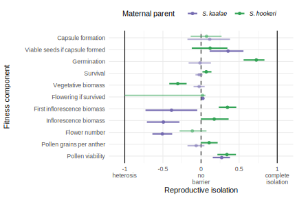
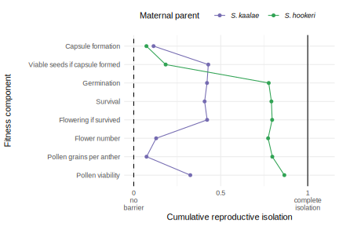
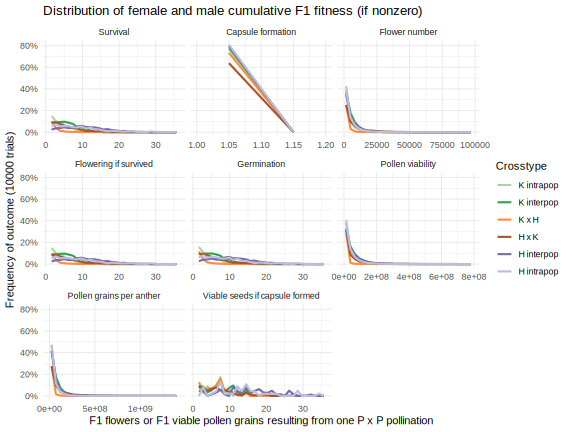
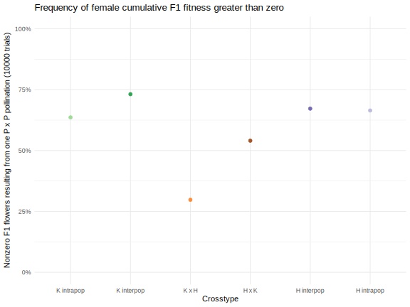
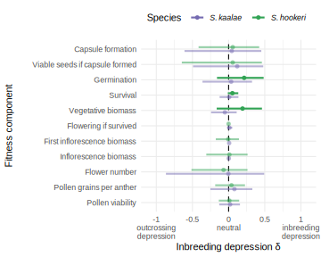
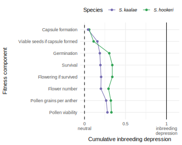
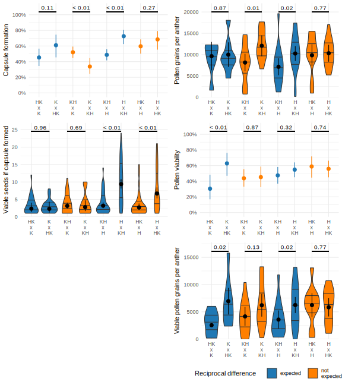

library(tidyverse)
library(RColorBrewer)
library(glmmTMB)
library(broom)
library(emmeans)
library(knitr)
knitr::opts_chunk$set(comment="", cache=T, warning = F, message = F, fig.path = "figures/", dev = "svglite", fig.width=5, fig.height=4, width=999)
options(digits=4, knitr.kable.NA = "") # for kables
load("data/rims_data.rda")
sxc.labels <- set_names(c("K intrapop", "K interpop", "K x H", "H x K", "H interpop", "H intrapop"), sxc.levels)
F1.col <- set_names(c(brewer.pal(3,"Greens")[2:3],brewer.pal(9,"Oranges")[5], brewer.pal(9,"Set1")[7], brewer.pal(3,"Purples")[3:2]), sxc.levels)Datasets
For seed production (capsule formation and viable seeds), the generation refers to the zygote generation (e.g. F2 seed grown from an F1 plant), otherwise the plant that produced the trait (e.g. F2 pollen is from F2 plants). This convention isn’t always carried over to the name of the dataset for historical reasons.
traits %>% filter(generation !="P") %>% select(c(generation,ylab, yvar, data, type)) %>% kable| generation | ylab | yvar | data | type |
|---|---|---|---|---|
| F1 | Capsule formation | capsule.formed | seeds | binary |
| F1 | Viable seeds if capsule formed | viable.seeds | seeds.nonzero | continuous |
| F1 | Germination | prop.germ | germination | binary |
| F1 | Survival | alive | survflr | binary |
| F1 | Vegetative biomass (g) | veg.biomass.g | vegbiomass | continuous |
| F1 | Flowering if survived | flowered | survflr.alive | binary |
| F1 | Days to flower | firstflower | survflr | continuous |
| F1 | First inflorescence biomass (g) | firstinflo.biomass.g | survflr | continuous |
| F1 | Inflorescence biomass (g) | inflo.biomass.g | inflobiomass.sum | continuous |
| F1 | Flower number | flower.number | inflobiomass.sum | continuous |
| F1 | Pollen grains per anther | total.per.anther | pollen | continuous |
| F1 | Pollen viability | prop.viable | pollen | binary |
| F1 | Viable pollen grains per anther | viable.per.anther | pollen | continuous |
| F2 | Capsule formation | capsule.formed | f1seeds | binary |
| F2 | Viable seeds if capsule formed | viable.seeds | f1seeds.nonzero | continuous |
| F2 | Seed mass (mg) | seed.mass.mg | f1seedmass | continuous |
| F2 | Pollen grains per anther | total.per.anther | f2pollen | continuous |
| F2 | Pollen viability | prop.viable | f2pollen | binary |
| F2 | Viable pollen grains per anther | viable.per.anther | f2pollen | continuous |
| F3 | Capsule formation | capsule.formed | f1seeds | binary |
| F3 | Viable seeds if capsule formed | viable.seeds | f1seeds.nonzero | continuous |
F1 Generation
Sample sizes
These sample sizes are the number of rows in the dataset. The rows mean different things in each dataset:
- seeds = seeds from one pollination
- germination = seeds from one pollination (multiple pots are pooled)
- vegbiomass = one offspring plant, if it survived
- survflr = one offspring plant
- pollen = one pollen collection
- inflobiomass = one offspring plant, if it flowered
F1 <- set_names(datanames[1:6]); F1[[6]] <- "inflobiomass.sum"
map_dfr(F1, ~ tally(get(.)), .id="dataset") %>%
pivot_wider(names_from=dataset, values_from=n) %>% kable(caption="F1 datasets totals")| seeds | germination | vegbiomass | survflr | pollen | inflobiomass |
|---|---|---|---|---|---|
| 533 | 235 | 1053 | 1567 | 197 | 1017 |
map_dfr(F1, ~ tally(group_by(get(.), crosstype, momsp, dadsp)), .id="dataset") %>%
pivot_wider(names_from=dataset, values_from=n) %>% kable(caption="F1 datasets by crosstype and species")| crosstype | momsp | dadsp | seeds | germination | vegbiomass | survflr | pollen | inflobiomass |
|---|---|---|---|---|---|---|---|---|
| between | hook | hook | 64 | 25 | 256 | 377 | 15 | 247 |
| between | kaal | kaal | 55 | 37 | 192 | 254 | 37 | 193 |
| within | hook | hook | 47 | 19 | 127 | 223 | 15 | 118 |
| within | kaal | kaal | 34 | 19 | 85 | 125 | 20 | 89 |
| hybrid | hook | kaal | 156 | 62 | 326 | 469 | 61 | 314 |
| hybrid | kaal | hook | 177 | 73 | 67 | 119 | 49 | 56 |
map_dfr(F1, ~ tally(group_by(get(.), crosstype, momsp, dadsp, mompop, dadpop)), .id="dataset") %>%
pivot_wider(names_from=dataset, values_from=n) %>% kable(caption="F1 datasets by crosstype and population")| crosstype | momsp | dadsp | mompop | dadpop | seeds | germination | vegbiomass | survflr | pollen | inflobiomass |
|---|---|---|---|---|---|---|---|---|---|---|
| between | hook | hook | WK | 879WKG | 35 | 13 | 149 | 241 | 9 | 145 |
| between | hook | hook | 879WKG | WK | 29 | 12 | 107 | 136 | 6 | 102 |
| between | kaal | kaal | 892WKG | 904WPG | 11 | 8 | 31 | 44 | 7 | 29 |
| between | kaal | kaal | 892WKG | 3587WP | 5 | 3 | 3 | 12 | 9 | 3 |
| between | kaal | kaal | 904WPG | 892WKG | 10 | 8 | 82 | 94 | 6 | 82 |
| between | kaal | kaal | 904WPG | 3587WP | 7 | 4 | 23 | 30 | 5 | 24 |
| between | kaal | kaal | 3587WP | 892WKG | 11 | 7 | 24 | 31 | 4 | 26 |
| between | kaal | kaal | 3587WP | 904WPG | 11 | 7 | 29 | 43 | 6 | 29 |
| within | hook | hook | WK | WK | 25 | 6 | 71 | 128 | 10 | 71 |
| within | hook | hook | 879WKG | 879WKG | 22 | 13 | 56 | 95 | 5 | 47 |
| within | kaal | kaal | 892WKG | 892WKG | 9 | 6 | 5 | 15 | 7 | 5 |
| within | kaal | kaal | 904WPG | 904WPG | 14 | 6 | 63 | 83 | 6 | 68 |
| within | kaal | kaal | 3587WP | 3587WP | 11 | 7 | 17 | 27 | 7 | 16 |
| hybrid | hook | kaal | WK | 892WKG | 28 | 11 | 79 | 118 | 10 | 75 |
| hybrid | hook | kaal | WK | 904WPG | 20 | 8 | 33 | 61 | 8 | 33 |
| hybrid | hook | kaal | WK | 3587WP | 26 | 10 | 26 | 47 | 8 | 27 |
| hybrid | hook | kaal | 879WKG | 892WKG | 31 | 11 | 78 | 100 | 18 | 74 |
| hybrid | hook | kaal | 879WKG | 904WPG | 23 | 10 | 64 | 84 | 17 | 65 |
| hybrid | hook | kaal | 879WKG | 3587WP | 28 | 12 | 46 | 59 | 40 | |
| hybrid | kaal | hook | 892WKG | WK | 13 | 7 | ||||
| hybrid | kaal | hook | 892WKG | 879WKG | 33 | 15 | 17 | 24 | 8 | 15 |
| hybrid | kaal | hook | 904WPG | WK | 25 | 10 | 7 | 1 | ||
| hybrid | kaal | hook | 904WPG | 879WKG | 36 | 13 | 33 | 53 | 25 | 27 |
| hybrid | kaal | hook | 3587WP | WK | 32 | 12 | 7 | 1 | ||
| hybrid | kaal | hook | 3587WP | 879WKG | 38 | 16 | 17 | 28 | 14 | 14 |
Models
Expand this code to see the model specifications. The models have the following settings:
- response variable: for details see the metadata
- sxc: the combined maternal plant species and crosstype (within population, between population, hybrid)
- collect: the number of days from planting to harvest, to account for growth during harvest period
- mompid, dadpid: random effects of the maternal and paternal plant genotypes (clones are treated as the same genotype)
- data: for details and sample sizes see tables above
- family: gaussian (the default, for continuous variables), truncated_nbinom1 (quasi-Poisson truncated at zero for nonzero seed counts), betabinomial (for binary variables)
F1.mod <- list(
firstflower = glmmTMB(firstflower ~ sxc + (1|mompid) + (1|dadpid), data=survflr),
firstinflo.biomass.g = glmmTMB(firstinflo.biomass.g ~ sxc + collect + (1|mompid) + (1|dadpid), data=survflr),
inflo.biomass.g = glmmTMB(inflo.biomass.g ~ sxc + collect + (1|mompid) + (1|dadpid), data=inflobiomass.sum),
flower.number = glmmTMB(flower.number ~ sxc + collect + (1|mompid) + (1|dadpid), data=inflobiomass.sum),
veg.biomass.g = glmmTMB(veg.biomass.g ~ sxc + collect + (1|mompid) + (1|dadpid), data=vegbiomass),
total.per.anther = glmmTMB(total.per.anther ~ sxc + (1|mompid) + (1|dadpid), data=pollen),
viable.per.anther = glmmTMB(viable.per.anther ~ sxc + (1|mompid) + (1|dadpid), data=pollen),
viable.seeds = glmmTMB(viable.seeds ~ sxc + (1|mompid) + (1|dadpid), data=filter(seeds, viable.seeds>0),
family="truncated_nbinom1"),
prop.germ = glmmTMB(prop.germ ~ sxc + (1|mompid) + (1|dadpid), family="betabinomial", data=germination, weights = planted),
alive = glmmTMB(alive ~ sxc + (1|mompid) + (1|dadpid), family="betabinomial", data=survflr),
flowered = glmmTMB(flowered ~ sxc + (1|mompid) + (1|dadpid), family="betabinomial", data=filter(survflr, alive)),
prop.viable = glmmTMB(prop.viable ~ sxc + (1|mompid) + (1|dadpid), family="betabinomial", data=pollen, weights = total),
capsule.formed = glmmTMB(capsule.formed ~ sxc + (1|mompid) + (1|dadpid), family="betabinomial", data=seeds))
save(F1.mod, file="data/F1mod.rda")
#load("data/F1mod.rda")Inference
P-values for the overall effect of species and crosstype, or collection date, on the trait.
F1.test <- map_dfr(F1.mod, ~car::Anova(.) %>% tidy(), .id="trait")
F1.test %>% left_join(traits %>% filter(generation=="F1") %>% select(trait=yvar, step)) %>%
arrange(step) %>% select(-step) %>%
mutate(term=recode(term, sxc = "species and crosstype", collect= "collection date"),
trait = recode(trait, !!!set_names(traits$ylab[-1], traits$yvar[-1])) %>%
str_remove(fixed(" (g)")),
p.value=format(p.value,digits=2)) %>%
kable(digits=1, caption="ANOVA of GLMM (Type III Wald chisquare tests)")| trait | term | statistic | df | p.value |
|---|---|---|---|---|
| Capsule formation | species and crosstype | 8.1 | 5 | 1.5e-01 |
| Viable seeds if capsule formed | species and crosstype | 93.3 | 5 | 1.4e-18 |
| Germination | species and crosstype | 147.8 | 5 | 4.0e-30 |
| Survival | species and crosstype | 17.4 | 5 | 3.9e-03 |
| Vegetative biomass | species and crosstype | 199.5 | 5 | 3.7e-41 |
| Vegetative biomass | collection date | 71.9 | 1 | 2.3e-17 |
| Flowering if survived | species and crosstype | 10.3 | 5 | 6.7e-02 |
| Days to flower | species and crosstype | 66.7 | 5 | 5.0e-13 |
| First inflorescence biomass | species and crosstype | 358.6 | 5 | 2.5e-75 |
| First inflorescence biomass | collection date | 64.7 | 1 | 8.5e-16 |
| Inflorescence biomass | species and crosstype | 117.8 | 5 | 9.2e-24 |
| Inflorescence biomass | collection date | 10.0 | 1 | 1.6e-03 |
| Flower number | species and crosstype | 126.3 | 5 | 1.5e-25 |
| Flower number | collection date | 5.6 | 1 | 1.8e-02 |
| Pollen grains per anther | species and crosstype | 13.1 | 5 | 2.2e-02 |
| Pollen viability | species and crosstype | 177.8 | 5 | 1.6e-36 |
| Viable pollen grains per anther | species and crosstype | 66.2 | 5 | 6.4e-13 |
F1.emm <- map_dfr(F1.mod, ~emmeans(., ~sxc) %>% summary(type="response") %>% #average over collect date
tidy %>% rename(estimate=any_of(c("response","prob"))), .id="trait") Plots
Estimated marginal means with 95% CI are shown as dots. For the continuous variables, these show violin plots of the raw data with median and first and third quartiles. For binary variables, colored dots show the proportions of each population x population combination.
plot_F1 <- function(emm, data, yvar, ylab, type="continuous") {
data <- get(data)
if(type=="continuous") {
p <- ggplot(data, aes_string(y=yvar, x="sxc", fill="sxc")) +
geom_violin(draw_quantiles = (1:3)/4) +
geom_pointrange(data=filter(emm, trait==yvar), aes(y=estimate, ymax=conf.high, ymin=conf.low)) +
scale_fill_manual(values=F1.col) + guides(fill="none") +
scale_y_continuous(name = ylab, expand = expansion(mult=c(0, 0.05)), limits=c(0,NA))
} else if(type=="binary") {
p <- data %>% drop_na(all_of(yvar)) %>%
group_by(sxc, mompop, dadpop) %>% summarize(across(all_of(yvar), ~sum(.)/n()), n=n(), .groups="drop") %>%
ggplot(aes_string(y=yvar, x="sxc", color="sxc")) +
geom_point(size=4)+
geom_pointrange(data=filter(emm, trait==yvar) %>%
mutate(conf.low = ifelse(conf.high-conf.low>0.9,NA,conf.low),
conf.high = ifelse(conf.high-conf.low>0.9,NA,conf.high)),
aes(y=estimate, ymax=conf.high, ymin=conf.low), color="black") +
scale_color_manual(values=F1.col) + guides(color="none") +
scale_y_continuous(ylab, limits=c(0,1), labels=~scales::percent(.,accuracy=1))
}
p <- p + scale_x_discrete("Cross", labels = sxc.labels) +
theme_minimal() + theme(panel.grid.major.x = element_blank())
print(p)
}
traits %>% filter(generation=="F1") %>% select(data, yvar, ylab, type) %>%
pwalk(plot_F1, emm=F1.emm)


Flower biomass regression
summary(biomass.flrs.lm)
Call:
lm(formula = log10(flrs) ~ poly(log10(inflo.biomass.g), 2) *
cross, data = inflobiomass)
Residuals:
Min 1Q Median 3Q Max
-0.5064 -0.0684 0.0152 0.0852 0.3093
Coefficients:
Estimate Std. Error t value Pr(>|t|)
(Intercept) 2.6104 0.1090 23.96 < 2e-16
poly(log10(inflo.biomass.g), 2)1 27.1968 3.4410 7.90 1.8e-14
poly(log10(inflo.biomass.g), 2)2 3.9869 1.5234 2.62 0.0091
crossHK 0.0234 0.1131 0.21 0.8363
crossKH 0.0590 0.1243 0.47 0.6353
crossKK -0.2267 0.1099 -2.06 0.0395
poly(log10(inflo.biomass.g), 2)1:crossHK -0.7326 3.5995 -0.20 0.8388
poly(log10(inflo.biomass.g), 2)2:crossHK -2.5828 1.9214 -1.34 0.1795
poly(log10(inflo.biomass.g), 2)1:crossKH -1.0470 4.0231 -0.26 0.7948
poly(log10(inflo.biomass.g), 2)2:crossKH -2.2318 2.6458 -0.84 0.3993
poly(log10(inflo.biomass.g), 2)1:crossKK -3.5707 3.5058 -1.02 0.3089
poly(log10(inflo.biomass.g), 2)2:crossKK -0.4190 1.7004 -0.25 0.8055
(Intercept) ***
poly(log10(inflo.biomass.g), 2)1 ***
poly(log10(inflo.biomass.g), 2)2 **
crossHK
crossKH
crossKK *
poly(log10(inflo.biomass.g), 2)1:crossHK
poly(log10(inflo.biomass.g), 2)2:crossHK
poly(log10(inflo.biomass.g), 2)1:crossKH
poly(log10(inflo.biomass.g), 2)2:crossKH
poly(log10(inflo.biomass.g), 2)1:crossKK
poly(log10(inflo.biomass.g), 2)2:crossKK
---
Signif. codes: 0 '***' 0.001 '**' 0.01 '*' 0.05 '.' 0.1 ' ' 1
Residual standard error: 0.125 on 488 degrees of freedom
(1024 observations deleted due to missingness)
Multiple R-squared: 0.931, Adjusted R-squared: 0.929
F-statistic: 595 on 11 and 488 DF, p-value: <2e-16ggplot(inflobiomass, aes(x=inflo.biomass.g, y=flrs, color=cross)) +
geom_point() + geom_smooth(method="lm", formula = y ~ poly(x,2), se=F)+
geom_rug(data=inflobiomass.sum, aes(x=inflo.biomass.g/inflo, y=10), sides="b") +
scale_x_log10() + scale_y_log10() +
scale_color_manual(values=set_names(F1.col, c("KKwithin","KK", "KH", "HK", "HH", "HHwithin"))[-c(1,6)]) +
theme_minimal() + labs(y="Flower number", x="Inflorescence biomass (g)", color="Cross")
ggplot(inflobiomass, aes(x=inflo.biomass.g, y=flrs/inflo.biomass.g, color=cross)) +
geom_point() + geom_smooth(se=F, span=0.8) +
scale_x_log10() + scale_y_log10() +
scale_color_manual(values=set_names(F1.col, c("KKwithin","KK", "KH", "HK", "HH", "HHwithin"))[-c(1,6)]) +
theme_minimal() + labs(y="Flowers per g biomass", x="Inflorescence biomass (g)", color="Cross")
ggplot(inflobiomass.sum, aes(y=inflo, x=sxc, fill=sxc)) +
geom_boxplot() + geom_violin(fill=NA) +
scale_fill_manual(values=F1.col) + guides(fill="none") +
scale_y_continuous("Inflorescences", expand = expansion(mult=c(0, 0.05)), limits=c(0,NA))+
scale_x_discrete("Cross", labels = sxc.labels) +
theme_minimal() + theme(panel.grid.major.x = element_blank())
ggplot(inflobiomass.sum, aes(y=inflo.biomass.g/inflo, x=sxc, fill=sxc)) +
geom_boxplot() + geom_violin(fill=NA) +
scale_fill_manual(values=F1.col) + guides(fill="none") +
scale_y_continuous("Biomass per inflorescence (g)", expand = expansion(mult=c(0, 0.05)), limits=c(0,NA))+
scale_x_discrete("Cross", labels = sxc.labels) +
theme_minimal() + theme(panel.grid.major.x = element_blank())
ggplot(inflobiomass.sum, aes(y=flower.number/inflo, x=sxc, fill=sxc)) +
geom_boxplot() + geom_violin(fill=NA) +
scale_fill_manual(values=F1.col) + guides(fill="none") +
scale_y_continuous("Flowers per inflorescence", expand = expansion(mult=c(0, 0.05)), limits=c(0,NA))+
scale_x_discrete("Cross", labels = sxc.labels) +
theme_minimal() + theme(panel.grid.major.x = element_blank())
Fitness and RI
F1.emm %>% left_join(traits %>% filter(generation=="F1") %>% select(trait=yvar, step)) %>% arrange(step) %>%
mutate(est.se = paste(round(estimate,2.5-log10(estimate)), "\U00B1", round(std.error,2.5-log10(estimate))),
trait = recode(trait, !!!set_names(traits$ylab[-1], traits$yvar[-1])),
sxc = recode(sxc, !!!sxc.labels)) %>%
select(trait, sxc, est.se) %>% pivot_wider(names_from = sxc, values_from=est.se) %>%
kable(caption="Absolute fitness components with estimated marginal mean and standard error")| trait | K intrapop | K interpop | K x H | H x K | H interpop | H intrapop |
|---|---|---|---|---|---|---|
| Capsule formation | 0.793 ± 0.099 | 0.841 ± 0.07 | 0.727 ± 0.083 | 0.634 ± 0.106 | 0.797 ± 0.091 | 0.762 ± 0.106 |
| Viable seeds if capsule formed | 6.12 ± 0.94 | 6.49 ± 0.85 | 5.11 ± 0.59 | 6.26 ± 0.82 | 13.1 ± 1.7 | 11.6 ± 1.6 |
| Germination | 0.536 ± 0.071 | 0.682 ± 0.051 | 0.109 ± 0.023 | 0.706 ± 0.048 | 0.688 ± 0.057 | 0.665 ± 0.063 |
| Survival | 0.936 ± 0.026 | 0.988 ± 0.007 | 0.862 ± 0.042 | 0.938 ± 0.016 | 0.895 ± 0.026 | 0.887 ± 0.032 |
| Vegetative biomass (g) | 6.06 ± 0.73 | 7.5 ± 0.54 | 14.1 ± 0.8 | 15 ± 0.5 | 14.3 ± 0.6 | 15.1 ± 0.7 |
| Flowering if survived | 1 ± 0 | 1 ± 0 | 0.96 ± 0.021 | 0.947 ± 0.013 | 0.994 ± 0.004 | 0.984 ± 0.01 |
| Days to flower | 174 ± 3 | 184 ± 3 | 191 ± 4 | 186 ± 3 | 168 ± 3 | 174 ± 3 |
| First inflorescence biomass (g) | 0.586 ± 0.025 | 0.583 ± 0.022 | 0.282 ± 0.027 | 0.204 ± 0.025 | 0.0903 ± 0.0258 | 0.0896 ± 0.0268 |
| Inflorescence biomass (g) | 2.99 ± 0.25 | 3.02 ± 0.18 | 2.13 ± 0.28 | 2.64 ± 0.18 | 0.896 ± 0.198 | 0.894 ± 0.232 |
| Flower number | 1480 ± 210 | 1340 ± 140 | 1850 ± 250 | 2460 ± 120 | 712 ± 138 | 728 ± 177 |
| Pollen grains per anther | 11400 ± 700 | 11900 ± 600 | 9580 ± 630 | 12300 ± 500 | 10800 ± 800 | 9910 ± 820 |
| Pollen viability | 0.837 ± 0.033 | 0.846 ± 0.027 | 0.417 ± 0.045 | 0.511 ± 0.046 | 0.891 ± 0.029 | 0.872 ± 0.034 |
| Viable pollen grains per anther | 9480 ± 810 | 9800 ± 680 | 4500 ± 780 | 6330 ± 630 | 10200 ± 1000 | 8750 ± 990 |
#TODO to get confidence intervals of RI ratio, may need mratios or alt method here:
# https://stats.stackexchange.com/questions/16349/how-to-compute-the-confidence-interval-of-the-ratio-of-two-normal-means
calc_RI <- function(h, b) 1 - 2 * h/(h + b) #method of Sobel and Chen 2014 for hybrids vs. between-population intraspecific fitness
calc_ID <- function(w, b) 1 - w/b
highlow <- function(fn, a, b) { #method of Sobel and Streisfeld 2015 Fig. S1
combos <- c(fn(a[1], b[1]), fn(a[1],b[2]), fn(a[2],b[1]), fn(a[2], b[2]))
set_names(c(min(combos), max(combos)), c("low","high"))
}
F1.RI <- F1.emm %>% separate(sxc, into=c("momsp","crosstype")) %>%
filter(crosstype !="within", trait != "firstflower") %>% #TODO firstflower is backwards fitness
select(trait, momsp, crosstype, estimate, conf.low, conf.high) %>%
pivot_wider(names_from=crosstype, values_from=c(estimate, conf.low, conf.high)) %>%
rename_with(~ str_remove(.,"estimate_|conf.")) %>% rowwise() %>%
mutate(across(c(between,hybrid), ~ ./max(between,hybrid)),
RI = calc_RI(h=hybrid, b=between)) %>%
mutate(RI.range = list(highlow(fn=calc_RI, a=c(low_hybrid, high_hybrid), b=c(low_between, high_between))),
.keep="unused") %>% unnest_wider(RI.range) %>%
left_join(traits %>% filter(generation=="F1") %>% select(trait=yvar, step, sex)) %>% arrange(step) %>%
mutate(trait = recode(trait, !!!set_names(traits$ylab[-1], traits$yvar[-1])) %>%
str_remove(fixed(" (g)")) %>% factor() %>% fct_reorder(step))
abs_contribution <- function(RI) { #method of Ramsey et al. 2003 for absolute contribution to RI
AC <- RI
for(n in 1:length(RI)) {
AC[[n]] <- RI[[n]] * (1 - sum(AC[1:n-1]))
}
return(AC)
}
#cumulative reproductive isolation
F1.CRI.m <- F1.RI %>% filter(str_detect(sex,"m")) %>% select(trait, momsp, RI) %>%
pivot_wider(names_prefix="RI_", names_from=momsp, values_from=RI) %>%
mutate(across(starts_with("RI"), abs_contribution, .names="AC{.col}"),
across(starts_with("AC"), ~ . /sum(.), .names="R{.col}"),
across(starts_with("AC"), cumsum, .names="T{.col}"),
.keep = "unused")
F1.RI %>% select(trait, momsp, between, hybrid, RI) %>%
pivot_wider(names_from=momsp, values_from=c(between, hybrid, RI)) %>%
left_join(F1.CRI.m) %>%
select(trait, KK = between_kaal, KH = hybrid_kaal, K_RI = RI_kaal, K_AC = ACRI_kaal, K_RC = RACRI_kaal,
HH = between_hook, HK = hybrid_hook, H_RI = RI_hook, H_AC = ACRI_hook, H_RC = RACRI_hook) %>%
kable(caption="Relative fitness components of hybrids vs. maternal parent. RI, AC, RC follow Sobel & Chen 2014, Ramsey et al. 2003", digits=3)| trait | KK | KH | K_RI | K_AC | K_RC | HH | HK | H_RI | H_AC | H_RC |
|---|---|---|---|---|---|---|---|---|---|---|
| Capsule formation | 1.000 | 0.864 | 0.073 | 0.073 | 0.085 | 1.000 | 0.795 | 0.114 | 0.114 | 0.375 |
| Viable seeds if capsule formed | 1.000 | 0.787 | 0.119 | 0.111 | 0.129 | 1.000 | 0.476 | 0.355 | 0.315 | 1.035 |
| Germination | 1.000 | 0.160 | 0.725 | 0.592 | 0.688 | 0.974 | 1.000 | -0.013 | -0.008 | -0.025 |
| Survival | 1.000 | 0.872 | 0.068 | 0.015 | 0.018 | 0.954 | 1.000 | -0.024 | -0.014 | -0.045 |
| Vegetative biomass | 0.533 | 1.000 | -0.305 | 0.952 | 1.000 | -0.025 | ||||
| Flowering if survived | 1.000 | 0.960 | 0.021 | 0.004 | 0.005 | 1.000 | 0.952 | 0.024 | 0.014 | 0.048 |
| First inflorescence biomass | 1.000 | 0.485 | 0.347 | 0.442 | 1.000 | -0.387 | ||||
| Inflorescence biomass | 1.000 | 0.704 | 0.174 | 0.339 | 1.000 | -0.494 | ||||
| Flower number | 0.727 | 1.000 | -0.158 | -0.032 | -0.038 | 0.290 | 1.000 | -0.551 | -0.319 | -1.049 |
| Pollen grains per anther | 1.000 | 0.806 | 0.107 | 0.026 | 0.030 | 0.877 | 1.000 | -0.066 | -0.059 | -0.193 |
| Pollen viability | 1.000 | 0.493 | 0.340 | 0.072 | 0.084 | 1.000 | 0.573 | 0.271 | 0.259 | 0.854 |
| Viable pollen grains per anther | 1.000 | 0.460 | 0.370 | 1.000 | 0.624 | 0.232 |
ggplot(F1.RI, aes(y=fct_rev(trait), x=RI, color=momsp)) +
geom_vline(xintercept=0, linetype=2) + geom_vline(xintercept=-1)+ geom_vline(xintercept=1)+
geom_linerange(aes(xmin=low, xmax=high), position=position_dodge(width=0.2)) +
geom_point(shape=17, size=2, position=position_dodge(width=0.2)) +
scale_color_manual(values = set_names(F1.col[c(2,5)], c("kaal","hook")), labels=c("S. kaalae","S. hookeri")) +
scale_x_continuous(limits=c(-1.1,1.1), breaks=c(-1,-0.5,0,0.5,1),
labels=c("-1\nheterosis","-0.5","0\nno\nbarrier","0.5","1\ncomplete\nisolation")) +
theme_minimal() + theme(legend.position = "top", legend.text = element_text(face="italic"))+
labs(x="Reproductive isolation", y="Fitness component", color="Maternal parent")
F1.CRI.m %>% summarize(across(starts_with("AC"), sum)) %>% rename_with(~str_remove(.,"ACRI_")) %>%
kable(caption="Total male reproductive isolation = sum of absolute contributions (AC) to RI", digits=3)| kaal | hook |
|---|---|
| 0.86 | 0.304 |
F1.CRI.m %>% pivot_longer(starts_with("TAC"), names_prefix="TACRI_", names_to="momsp", values_to="TAC") %>%
ggplot(aes(y=fct_rev(trait), x=TAC, color=momsp)) +
geom_vline(xintercept=0, linetype=2) + geom_vline(xintercept=1)+
geom_path(aes(group=momsp))+
geom_point(shape=17, size=2) +
scale_color_manual(values = set_names(F1.col[c(2,5)], c("kaal","hook")), labels=c("S. kaalae","S. hookeri")) +
scale_x_continuous(limits=c(NA, 1.1), breaks=c(0,0.5,1),
labels=c("0\nno\nbarrier","0.5","1\ncomplete\nisolation")) +
theme_minimal() + theme(legend.position = "top", legend.text = element_text(face="italic"))+
labs(x="Cumulative reproductive isolation", y="Fitness component", color="Maternal parent")
Distribution of cumulative fitness
#dataname = name of the dataset, yvar = the fitness trait, N = number of trials for each species and crosstype
sample_trait <- function(dataname, yvar, N) {
get(dataname) %>% select(sxc, y=!!yvar) %>%
drop_na(y) %>% #drop missing trait values (various reasons for these)
group_by(sxc) %>% nest() %>% #subset data by the species and crosstype (between/within/hybrid)
mutate(sampled = map(data, slice_sample, n=N, replace=T)) %>% #sample each subset N times with replacement
select(-data) %>% unnest(sampled) %>% arrange(sxc) %>% mutate(trial=row_number()) #give each trial an index
}
set.seed(1)
ntrials <- 10000
F1.cumul.fitness <- traits %>%
filter(generation=="F1", str_detect(sex,"m")) %>% select(data, yvar) %>% # independent multiplicative traits
mutate(samp = pmap(., sample_trait, N = ntrials)) %>% # sample each trait N times per species and crosstype
select(-data) %>% unnest(samp) %>% # expand sampled dataset to full size
pivot_wider(id_cols=c(sxc, trial), names_from=yvar, values_from=y) %>% # line up the trials for each variable
mutate(fitness_viable.seeds = capsule.formed * viable.seeds,
fitness_flowered = capsule.formed * viable.seeds * prop.germ * alive * flowered,
fitness_flower.number= capsule.formed * viable.seeds * prop.germ * alive * flowered * flower.number,
fitness_prop.viable = capsule.formed * viable.seeds * prop.germ * alive * flowered * flower.number * total.per.anther * prop.viable)
F1.cumul.fitness %>% select(sxc, starts_with("fitness")) %>%
pivot_longer(starts_with("fitness"), names_to="stage", names_prefix = "fitness_") %>%
ggplot(aes(x=value, color=sxc)) + facet_wrap(vars(stage), scales="free_x", labeller=as_labeller(deframe(select(traits, yvar, ylab))))+
geom_freqpoly(bins=30, boundary=1, position=position_identity(), size=1) +
scale_color_manual("Crosstype", values=F1.col, labels=sxc.labels) +
scale_y_continuous(labels = ~scales::percent(./ntrials)) + scale_x_continuous(limits=c(1,NA)) + theme_minimal() +
labs(y=paste0("Frequency of outcome (",ntrials," trials)"),
x="F1 flowers or F1 viable pollen grains resulting from one P x P pollination",
title = "Distribution of female and male cumulative F1 fitness (if nonzero)") 
F1.cumul.fitness %>% group_by(sxc) %>% summarize(prop.zero=mean(fitness_flower.number>0)) %>%
ggplot(aes(y=prop.zero, x=sxc, color=sxc)) +
geom_point(size=2)+
scale_color_manual(values=F1.col, guide="none") +
scale_y_continuous(limits=c(0,1), labels=scales::percent) + scale_x_discrete(labels=sxc.labels) + theme_minimal() +
labs(y=paste0("Nonzero F1 flowers resulting from one P x P pollination (",ntrials," trials)"), x="Crosstype",
title = "Frequency of female cumulative F1 fitness greater than zero") 
trials_to_average <- 50
F1.cumul.isolation <- F1.cumul.fitness %>%
group_by(sxc, meanblock = ceiling(trial / trials_to_average)) %>% #group into blocks of trials_to_average trials
summarize(across(starts_with("fitness"), mean)) %>% #take the mean fitness for each block and crosstype
pivot_longer(starts_with("fitness"), names_prefix = "fitness_", names_to="stage", values_to="fitness") %>%
separate(sxc, into=c("momsp","crosstype")) %>%
pivot_wider(names_from=crosstype, values_from=fitness) %>%
mutate(stage = factor(stage, levels=unique(traits$yvar)),
RI = 1 - 2 * hybrid/(hybrid + between),
ID = 1 - within/between)
F1.CRI.TACmf <- F1.CRI.m %>%
pivot_longer(starts_with("TAC"), names_prefix="TACRI_", names_to="momsp", values_to="TAC") %>%
mutate(stage = recode(trait, !!!set_names(traits$yvar[-1], traits$ylab[-1]))) %>%
filter(stage %in% unique(F1.cumul.isolation$stage)) %>%
rename(RI=TAC)
ggplot(F1.cumul.isolation, aes(y=fct_rev(stage), color=momsp, x=RI)) +
geom_vline(xintercept=0, linetype=2) + geom_vline(xintercept=-1)+ geom_vline(xintercept=1)+
geom_violin(draw_quantiles=(1:3)/4, position=position_dodge(width=0.5)) +
geom_path(aes(group=momsp), data=F1.CRI.TACmf, position=position_dodge(width=0.5)) +
geom_point(data=F1.CRI.TACmf, position=position_dodge(width=0.5), size=2, shape=17) +
scale_y_discrete(labels=deframe(select(traits, yvar, ylab))) +
scale_color_manual(values = set_names(F1.col[c(2,5)], c("kaal","hook")), labels=c("S. kaalae","S. hookeri")) +
scale_x_continuous(limits=c(-1.1,1.1), breaks=c(-1,-0.5,0,0.5,1),
labels=c("-1\nheterosis","-0.5","0\nno\nbarrier","0.5","1\ncomplete\nisolation")) +
theme_minimal() + theme(legend.position = "top", legend.text = element_text(face="italic")) +
labs(x="Cumulative reproductive isolation", y="Fitness component", color="Maternal parent")Inbreeding depression
F1.inbred <- F1.emm %>% separate(sxc, into=c("momsp","crosstype")) %>%
filter(crosstype !="hybrid", trait != "firstflower") %>% #TODO firstflower is backwards fitness
select(trait, momsp, crosstype, estimate, conf.low, conf.high) %>%
pivot_wider(names_from=crosstype, values_from=c(estimate, conf.low, conf.high)) %>%
rename_with(~ str_remove(.,"estimate_|conf.")) %>% rowwise() %>%
mutate(across(c(between,within), ~ ./max(between,within)),
ID = calc_ID(w=within, b=between)) %>%
mutate(ID.range = list(highlow(fn=calc_ID, a=c(low_within, high_within), b=c(low_between, high_between))),
.keep="unused") %>% unnest_wider(ID.range) %>%
left_join(traits %>% filter(generation=="F1") %>% select(trait=yvar, step, sex)) %>% arrange(step) %>%
mutate(trait = recode(trait, !!!set_names(traits$ylab[-1], traits$yvar[-1])) %>%
str_remove(fixed(" (g)")) %>% factor() %>% fct_reorder(step))
F1.inbred %>% select(trait, momsp, between, within, ID) %>%
pivot_wider(names_from=momsp, values_from=c(between, within, ID)) %>%
select(trait, between_kaal, within_kaal, ID_kaal, between_hook, within_hook, ID_hook) %>%
kable(caption="Inbreeding depression \u03B4 = 1 - (within pop / between pop)", digits=3)| trait | between_kaal | within_kaal | ID_kaal | between_hook | within_hook | ID_hook |
|---|---|---|---|---|---|---|
| Capsule formation | 1.000 | 0.943 | 0.057 | 1.000 | 0.956 | 0.044 |
| Viable seeds if capsule formed | 1.000 | 0.943 | 0.057 | 1.000 | 0.881 | 0.119 |
| Germination | 1.000 | 0.786 | 0.214 | 1.000 | 0.967 | 0.033 |
| Survival | 1.000 | 0.947 | 0.053 | 1.000 | 0.991 | 0.009 |
| Vegetative biomass | 1.000 | 0.807 | 0.193 | 0.951 | 1.000 | -0.051 |
| Flowering if survived | 1.000 | 1.000 | 0.000 | 1.000 | 0.990 | 0.010 |
| First inflorescence biomass | 0.995 | 1.000 | -0.005 | 1.000 | 0.992 | 0.008 |
| Inflorescence biomass | 1.000 | 0.989 | 0.011 | 1.000 | 0.997 | 0.003 |
| Flower number | 0.909 | 1.000 | -0.100 | 0.978 | 1.000 | -0.023 |
| Pollen grains per anther | 1.000 | 0.959 | 0.041 | 1.000 | 0.920 | 0.080 |
| Pollen viability | 1.000 | 0.990 | 0.010 | 1.000 | 0.979 | 0.021 |
| Viable pollen grains per anther | 1.000 | 0.967 | 0.033 | 1.000 | 0.861 | 0.139 |
ggplot(F1.inbred, aes(y=fct_rev(trait), x=ID, color=momsp)) +
geom_vline(xintercept=0, linetype=2) +
geom_linerange(aes(xmin=low, xmax=high), position=position_dodge(width=0.2)) +
geom_point(shape=17, size=2, position=position_dodge(width=0.2)) +
scale_color_manual(values = set_names(F1.col[c(2,5)], c("kaal","hook")), labels=c("S. kaalae","S. hookeri")) +
scale_x_continuous(limits=c(-1.1,1.1), breaks=c(-1,-0.5,0,0.5,1),
labels=c("-1\noutcrossing\ndepression","-0.5","0\nneutral","0.5","1\ninbreeding\ndepression")) +
theme_minimal() + theme(legend.position = "top", legend.text = element_text(face="italic"))+
labs(x="Inbreeding depression \u03B4", y="Fitness component", color="Species")
# Cumulative inbreeding depression
F1.CID.m <- F1.inbred %>% filter(str_detect(sex,"m")) %>% select(trait, momsp, ID) %>%
pivot_wider(names_prefix="ID_", names_from=momsp, values_from=ID) %>%
mutate(across(starts_with("ID"), abs_contribution, .names="AC{.col}"),
across(starts_with("AC"), ~ . /sum(.), .names="R{.col}"),
across(starts_with("AC"), cumsum, .names="T{.col}"),
.keep = "unused")
F1.inbred %>% select(trait, momsp, between, within, ID) %>%
pivot_wider(names_from=momsp, values_from=c(between, within, ID)) %>%
left_join(F1.CID.m) %>%
select(trait, Kb = between_kaal, Kw = within_kaal, K_ID = ID_kaal, K_AC = ACID_kaal, K_RC = RACID_kaal,
Hb = between_hook, Hw = within_hook, H_ID = ID_hook, H_AC = ACID_hook, H_RC = RACID_hook) %>%
kable(caption="Relative fitness components of within vs. between population crosses", digits=3)| trait | Kb | Kw | K_ID | K_AC | K_RC | Hb | Hw | H_ID | H_AC | H_RC |
|---|---|---|---|---|---|---|---|---|---|---|
| Capsule formation | 1.000 | 0.943 | 0.057 | 0.057 | 0.185 | 1.000 | 0.956 | 0.044 | 0.044 | 0.165 |
| Viable seeds if capsule formed | 1.000 | 0.943 | 0.057 | 0.054 | 0.174 | 1.000 | 0.881 | 0.119 | 0.113 | 0.430 |
| Germination | 1.000 | 0.786 | 0.214 | 0.190 | 0.616 | 1.000 | 0.967 | 0.033 | 0.028 | 0.107 |
| Survival | 1.000 | 0.947 | 0.053 | 0.037 | 0.119 | 1.000 | 0.991 | 0.009 | 0.007 | 0.026 |
| Vegetative biomass | 1.000 | 0.807 | 0.193 | 0.951 | 1.000 | -0.051 | ||||
| Flowering if survived | 1.000 | 1.000 | 0.000 | 0.000 | 0.000 | 1.000 | 0.990 | 0.010 | 0.008 | 0.032 |
| First inflorescence biomass | 0.995 | 1.000 | -0.005 | 1.000 | 0.992 | 0.008 | ||||
| Inflorescence biomass | 1.000 | 0.989 | 0.011 | 1.000 | 0.997 | 0.003 | ||||
| Flower number | 0.909 | 1.000 | -0.100 | -0.066 | -0.214 | 0.978 | 1.000 | -0.023 | -0.018 | -0.069 |
| Pollen grains per anther | 1.000 | 0.959 | 0.041 | 0.030 | 0.096 | 1.000 | 0.920 | 0.080 | 0.066 | 0.249 |
| Pollen viability | 1.000 | 0.990 | 0.010 | 0.007 | 0.023 | 1.000 | 0.979 | 0.021 | 0.016 | 0.059 |
| Viable pollen grains per anther | 1.000 | 0.967 | 0.033 | 1.000 | 0.861 | 0.139 |
F1.CID.m %>% summarize(across(starts_with("AC"), sum)) %>% rename_with(~str_remove(.,"ACID_")) %>%
kable(caption="Total male inbreeding depression = sum of absolute contributions (AC) to ID", digits=3)| kaal | hook |
|---|---|
| 0.309 | 0.264 |
F1.CID.m %>% pivot_longer(starts_with("TAC"), names_prefix="TACID_", names_to="momsp", values_to="TAC") %>%
ggplot(aes(y=fct_rev(trait), x=TAC, color=momsp)) +
geom_vline(xintercept=0, linetype=2) + geom_vline(xintercept=1)+
geom_path(aes(group=momsp))+
geom_point(shape=17, size=2) +
scale_color_manual(values = set_names(F1.col[c(2,5)], c("kaal","hook")), labels=c("S. kaalae","S. hookeri")) +
scale_x_continuous(limits=c(NA, 1.1), breaks=c(0,0.5,1),
labels=c("0\nneutral","0.5","1\ninbreeding\ndepression")) +
theme_minimal() + theme(legend.position = "top", legend.text = element_text(face="italic"))+
labs(x="Cumulative inbreeding depression", y="Fitness component", color="Species")
# Distribution of ID
F1.CID.TACmf <- F1.CID.m %>%
pivot_longer(starts_with("TAC"), names_prefix="TACID_", names_to="momsp", values_to="TAC") %>%
mutate(stage = recode(trait, !!!set_names(traits$yvar[-1], traits$ylab[-1]))) %>%
filter(stage %in% unique(F1.cumul.isolation$stage)) %>%
rename(ID=TAC)
ggplot(F1.cumul.isolation, aes(y=fct_rev(stage), color=momsp, x=ID)) +
geom_vline(xintercept=0, linetype=2) + geom_vline(xintercept=-1)+ geom_vline(xintercept=1)+
geom_violin(draw_quantiles=(1:3)/4, position=position_dodge(width=0.9)) +
geom_path(aes(group=momsp), data=F1.CID.TACmf, position=position_dodge(width=0.9)) +
geom_point(data=F1.CID.TACmf, position=position_dodge(width=0.9), size=2, shape=17) +
scale_y_discrete(labels=deframe(select(traits, yvar, ylab))) +
scale_color_manual(values = set_names(F1.col[c(2,5)], c("kaal","hook")), labels=c("S. kaalae","S. hookeri")) +
scale_x_continuous(limits=c(-1.1,1.1), breaks=c(-1,-0.5,0,0.5,1),
labels=c("-1\noutcrossing\ndepression","-0.5","0\nneutral","0.5","1\ninbreeding\ndepression")) +
theme_minimal() + theme(legend.position = "top", legend.text = element_text(face="italic")) +
labs(x="Cumulative inbreeding depression", y="Fitness component", color="Species")
F2 Generation
Sample sizes
These sample sizes are the number of rows in the dataset. The rows mean different things in each dataset:
- f1seeds = seeds from one pollination
- f1seeds = the mass of ten seeds
- f2pollen = one pollen collection
- f2seeds = seeds from one pollination
F2 <- set_names(datanames[7:10])
map_dfr(F2, ~ tally(get(.)), .id="dataset") %>%
pivot_wider(names_from=dataset, values_from=n) %>% kable(caption="F2 datasets totals")| f1seeds | f1seedmass | f2pollen | f2seeds |
|---|---|---|---|
| 1649 | 230 | 134 | 222 |
map_dfr(F2, ~ tally(group_by(get(.), generation, momdadcross)), .id="dataset") %>%
pivot_wider(names_from=dataset, values_from=n) %>% kable(caption="F2 datasets by cross")| generation | momdadcross | f1seeds | f1seedmass | f2pollen | f2seeds |
|---|---|---|---|---|---|
| FF | HK x HK | 97 | 15 | 11 | 38 |
| FF | KH x KH | 195 | 45 | 16 | 35 |
| FP | HK x H | 109 | 18 | 10 | 28 |
| FP | HK x K | 75 | 7 | 6 | 7 |
| FP | KH x H | 191 | 28 | 17 | 25 |
| FP | KH x K | 177 | 29 | 16 | 22 |
| PF | H x HK | 57 | 23 | 17 | 26 |
| PF | H x KH | 91 | 56 | 22 | 11 |
| PF | K x HK | 41 | 3 | 8 | 12 |
| PF | K x KH | 83 | 6 | 11 | 18 |
| PP | H x H | 111 | |||
| PP | H x K | 156 | |||
| PP | K x H | 177 | |||
| PP | K x K | 89 |
Models
F2.mod <- list(
seed.mass.mg = glmmTMB(seed.mass.mg ~ momdadcross, data=f1seedmass),
total.per.anther = glmmTMB(total.per.anther ~ momdadcross, data=f2pollen),
viable.per.anther = glmmTMB(viable.per.anther ~ momdadcross, data=f2pollen),
viable.seeds = glmmTMB(viable.seeds ~ momdadcross, data=filter(f1seeds, viable.seeds>0), family="truncated_nbinom1"),
prop.viable = glmmTMB(prop.viable ~ momdadcross, family="betabinomial", data=f2pollen, weights = total),
capsule.formed = glmmTMB(capsule.formed ~ momdadcross, family="betabinomial", data=f1seeds))Inference
F2.test <- map_dfr(F2.mod, ~car::Anova(.) %>% tidy(), .id="trait")
F2.test %>% left_join(traits %>% filter(generation=="F2") %>% select(trait=yvar, step)) %>%
arrange(step) %>% select(-step) %>%
mutate(trait = recode(trait, !!!set_names(traits$ylab[-1], traits$yvar[-1])),
p.value=format(p.value,digits=2)) %>%
kable(digits=1, caption="ANOVA of GLMM (Type III Wald chisquare tests)")| trait | term | statistic | df | p.value |
|---|---|---|---|---|
| Capsule formation | momdadcross | 94.5 | 13 | 1.9e-14 |
| Viable seeds if capsule formed | momdadcross | 359.8 | 13 | 6.9e-69 |
| Seed mass (mg) | momdadcross | 1108.8 | 9 | 6.0e-233 |
| Pollen grains per anther | momdadcross | 30.2 | 9 | 4.1e-04 |
| Pollen viability | momdadcross | 26.2 | 9 | 1.9e-03 |
| Viable pollen grains per anther | momdadcross | 25.2 | 9 | 2.8e-03 |
F2.emm <- map_dfr(F2.mod, ~emmeans(., ~momdadcross) %>% summary(type="response") %>%
tidy %>% rename(estimate=any_of(c("response","prob"))), .id="trait") Plots
Estimated marginal means with 95% CI are shown as dots. For the continuous variables, these show violin plots of the raw data with median and first and third quartiles.
All crosses
momdadcross.levels <- c("H x H","H x HK","H x KH","H x K","HK x H","HK x HK","HK x KH","HK x K","KH x H","KH x HK","KH x KH","KH x K","K x H","K x HK","K x KH","K x K")
momdadcross.labels <- momdadcross.levels %>% str_replace_all("\\s","\n") %>% set_names(momdadcross.levels)
plot_F2 <- function(emm, data, yvar, ylab, type="continuous") {
data <- get(data) %>% mutate(momdadcross = factor(as.character(momdadcross), levels=momdadcross.levels))
if(type=="continuous") {
p <- ggplot(data, aes_string(y=yvar, x="momdadcross", fill="momcross")) +
geom_violin(draw_quantiles = (1:3)/4) +
geom_pointrange(data=filter(emm, trait==yvar) %>%
separate(momdadcross, into=c("momcross","dadcross"), sep=" x ", remove=F) %>%
mutate(momdadcross = factor(as.character(momdadcross), levels=momdadcross.levels)),
aes(y=estimate, ymax=conf.high, ymin=conf.low),color="black") +
scale_fill_manual(values=set_names(F1.col[2:5],c("K","KH","HK","H")))+
guides(fill="none") +
scale_y_continuous(name = ylab, expand = expansion(mult=c(0, 0.05)), limits=c(0,NA))
} else if(type=="binary") {
p <- ggplot(data, aes_string(y=yvar, x="momdadcross", color="momcross")) +
geom_pointrange(data=filter(emm, trait==yvar) %>%
separate(momdadcross, into=c("momcross","dadcross"), sep=" x ", remove=F) %>%
mutate(momdadcross = factor(as.character(momdadcross), levels=momdadcross.levels)) %>%
mutate(conf.low = ifelse(conf.high-conf.low>0.9,NA,conf.low),
conf.high = ifelse(conf.high-conf.low>0.9,NA,conf.high)),
aes(y=estimate, ymax=conf.high, ymin=conf.low)) +
scale_color_manual(values=set_names(F1.col[2:5],c("K","KH","HK","H")))+
guides(color="none") +
scale_y_continuous(ylab, limits=c(0,1), labels=~scales::percent(.,accuracy=1))
}
p <- p + scale_x_discrete("Cross", labels = momdadcross.labels, drop=F) +
theme_minimal()
print(p)
}
traits %>% filter(generation=="F2") %>% select(data, yvar, ylab, type) %>%
pwalk(plot_F2, emm=F2.emm)


Cytonuclear incompatibility
F2.contrasts <- tibble(momdadcross = c("H x HK","HK x H","H x KH","KH x H","K x KH","KH x K","K x HK","HK x K"),
pair = rep(1:4, each=2),
reciprocal.difference = rep(c("not expected", "expected"), times = 2, each = 2))
reorder_momdadcross <- function(df) {
df %>% filter(momdadcross %in% F2.contrasts$momdadcross) %>%
left_join(F2.contrasts, by="momdadcross") %>%
mutate(momdadcross = fct_relevel(momdadcross, F2.contrasts$momdadcross))
}
plot_F2_contrasts <- function(emm, data, yvar, ylab, type="continuous") {
data <- get(data) %>% reorder_momdadcross()
emm <- emm %>% filter(trait==yvar) %>% reorder_momdadcross()
sig <- F2.mod[[yvar]] %>%
multcomp::glht(linfct = multcomp::mcp(momdadcross = F2.contrasts %>% group_by(pair) %>%
summarize(contrast = paste0("`", paste(momdadcross[1:2], collapse="` - `"),"` == 0")) %>%
pull(contrast))) %>% summary(test=multcomp::adjusted("none")) %>% tidy() %>% mutate(pair=1:4)
if(type=="continuous") {
p <- ggplot(data, aes_string(y=yvar, x="momdadcross")) +
geom_violin(aes(fill=reciprocal.difference),draw_quantiles = (1:3)/4) +
geom_pointrange(data=emm, aes(y=estimate, ymax=conf.high, ymin=conf.low),color="black", show.legend = F) +
scale_fill_manual("Reciprocal difference :::", values=brewer.pal(10,"Paired")[c(2,8)]) +
scale_y_continuous(name = ylab, expand = expansion(mult=c(0, 0.05)), limits=c(0,NA))
} else if(type=="binary") {
p <- ggplot(data, aes_string(y=yvar, x="momdadcross")) +
geom_pointrange(data=emm %>%
mutate(conf.low = ifelse(conf.high-conf.low>0.9,NA,conf.low),
conf.high = ifelse(conf.high-conf.low>0.9,NA,conf.high)),
aes(y=estimate, ymax=conf.high, ymin=conf.low, color=reciprocal.difference)) +
scale_color_manual("Reciprocal difference :", values=brewer.pal(10,"Paired")[c(2,8)])+
scale_y_continuous(ylab, limits=c(0,1), labels=~scales::percent(.,accuracy=1))
}
ytop = ifelse(type=="binary", 0.95, 1.02*max(pull(data, yvar), na.rm=T))
p <- p + scale_x_discrete("Cross", labels = momdadcross.labels) +
theme_minimal() + theme(legend.position = "top") +
geom_text(data=sig, aes(x = 2*pair-0.5, y=ytop*1.04, label=ifelse(p.value < 0.01, "< 0.01",round(p.value,2)))) +
geom_segment(aes(x=2*pair-1, xend=2*pair, y=ytop, yend=ytop))
print(p)
}
traits %>% filter(generation=="F2", data != "f1seedmass") %>% select(data, yvar, ylab, type) %>%
pwalk(plot_F2_contrasts, emm=F2.emm)